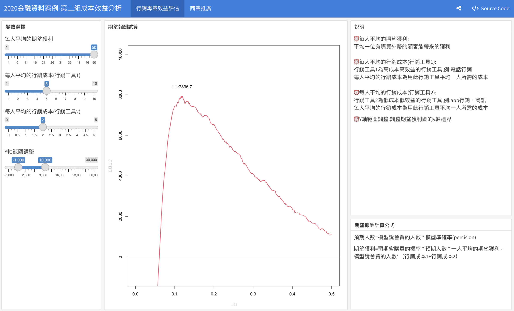
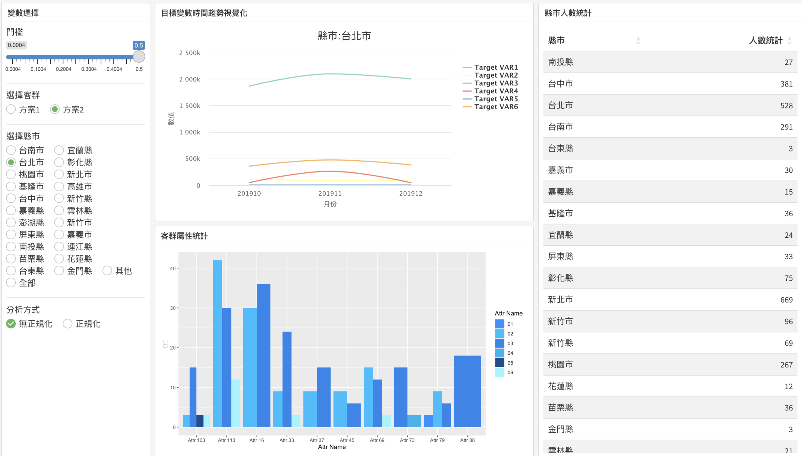

專案目標
透過學校及公司進行合作，讓學生累積使用銀行業真實數據進行完整分析的能力，公司也可挖掘新興的分析方法、想法、觀點
專案流程規劃
1.資料前處理
2.資料分析(探索性分析、診斷性分析)
3.資料特徵工程(預測分析)
4.指示性分析
5.結合所有結果提出行銷方案並跟公司匯報
專案結果呈現
此為金融服務與金融科技微學程所分析團隊共同開發的數據儀表板，透過數據儀表板來呈現行銷方案的效益模擬，在該儀表中透過各類假設，並考慮機器學習模型參數，來觀察不同架設以及不同機器學習參數的期望報酬試算。
在互動式儀表板中，可以觀察在特定假設下，機器學習模型參數以及期望報酬的關係，並從圖表中找到擁有最佳報酬的機器學習參數，上述功能可以提供在不同假設下擁有最佳期望報酬的機器學習模型參數，以增加機器學習模型在實務上的實用性，此外可透過調整門檻值調整機器學習模型所推薦的客戶數量並進行各類屬性進行視覺化，以此觀察預測客戶所擁有的屬性、重要變數的時間趨勢，並依此擬定行銷方案。
預測結果與成本效益模擬
下列圖一為根據機器學習模型預測結果，以及對於各類變數假設所提出的行銷方案效益進行模擬，在假設中可假對每個客戶的期望獲利、以及行銷工具的行銷成本，期望報酬的試算方法則呈現儀表板右下方。
 圖一行銷客群各類變數視覺化
在該數據儀表板中，透過調整儀表板門檻值大小來調整預測結果並進行視覺化，並了解推薦客戶的資訊，如居住地、或資料中其他類別資訊，其中亦有所關注的目標變數，透過視覺化亦可呈現這類變數在過去中的趨勢變化
註：為了保護資料隱私，已將部分變數去識別化
 圖二